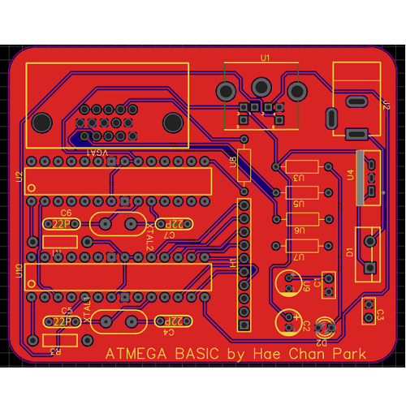

Here are some projects

Mixed Signal System PCB using STM32F407
June 2025 - Present
Using the Digilent ARTYA7 Artix-7 100T FPGA board along with Vivado Suite and VHDL to develop robust tests for computational acceleration chips. In collaboration with the Kim Group @ UCSB.

FPGA Implementation using Nexus A7100T for Bio Inspired Acoustic Sensors
May 2023 - Present
Rudimentary 8-bit functional computer that runs a version of Basic through the usage of two ATmega328PU chips. Utilizes PS/2 and VGA ports for input and output respectively. Currently in progress of manufacturing and soldering components for the PCB.
Documentation in progress.

Red Pitaya STEMLab 125-14 FPGA Feedback Implementation of Reservoir computing for Duffing type Bio Sensors
February 2023 - April 2023
A 4-bit breadboard processor built from various 7400 series TTL chips and other relevant components. Designed to learn more about computer architecture and digital logic design. Possesses 16 programmable addresses and can compute and store basic operations. Inspired by Ben Eater.

Red Pitaya STEMLab 125-10 Feedback Implementation of Hopfield type Bio Sensors
January 2022 - April 2022
An Arduino-based robot designed to prevent littering and environmental damage through its mobile capabilities as a trash bin. Utilizes radio and camera modules to allow for accurate movement to high concentration trash locations.

CovFo/DIPS
April 2020 - May 2020
Designed for the 2020 Entrepreneurship Project hosted at Dublin High. The product is made to make the lives of people safer using a virus tracker application and system in light of the COVID-19 Pandemic.

Squarefold
May 2019 - June 2019
Designed for the 2019 Entrepreneurship Project hosted at Dublin High, Squarefold is an innovative solution to resolve the growing issue of space in urban areas. This project won 1st place in its respective class.